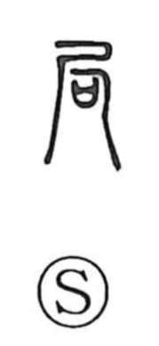

局

Kun: tsubone | On: kyoku
bureau ・ office ・ section ・ game round
Explanation
局 combines 尺 with 口, a vessel holding a prayer. 尺 here represents a dead person buried with the arms and legs folded inward. The prayer vessel accompanies the contracted body, asking that the dead person’s spirit be at peace.
The drawn-in posture gives the sense of crouching or being cramped. From contraction come narrowness, limitation, and a space confined within boundaries. A bounded part can then be a locality, a portion of the body, or a section of a larger organization.
The section’s assigned work supplies the administrative sense ‘bureau’ or ‘department.’ A game or performance can likewise be treated as a bounded stretch with a beginning and end, allowing 局 to name a round or a complete game.